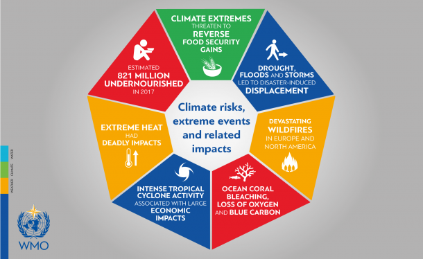

AC-CDM informs decisions about natural resource management. Essentially, AC-CDM provides information about how changes in ecosystems are likely to lead to changes in the flows of benefits to people. Decision-makers, from governments to conservation organizations, often manage lands and waters for multiple uses and inevitably must evaluate trade-offs among these uses. AC-CDM's multi-service, modular research and development framework provides an effective paradigm to explore the likely outcomes of alternative management and climate scenarios and for evaluating trade-offs among sectors and services. Government and Conservation agencies can use our framework to help determine how to manage lands, coasts, and marine areas to provide a desirable range of benefits to people or to help design permitting and mitigation programs that sustain nature’s benefits to society. We intend to better align our missions to protect biodiversity with activities that improve human livelihoods. We enable Governments decide how and where to invest in natural capital to ensure that their supply chains are sustainable and secure.
We can help answer questions like:
- Where do ecosystem services originate and where are they consumed?
- How does a proposed forestry management plan affect biodiversity, water quality and recreation?
- What kinds of coastal management and fishery policies will yield the best returns for sustainable fisheries, shoreline protection and recreation?
- Which parts of a watershed provide the greatest carbon sequestration, biodiversity, and tourism values?
- Where would reforestation achieve the greatest downstream water quality benefits while maintaining or minimizing losses in water flows?
- How will climate change and population growth impact ecosystem services and biodiversity?
- What benefits does marine spatial planning provide to society in addition to food from fishing and aquaculture and secure locations for renewable energy facilities?
